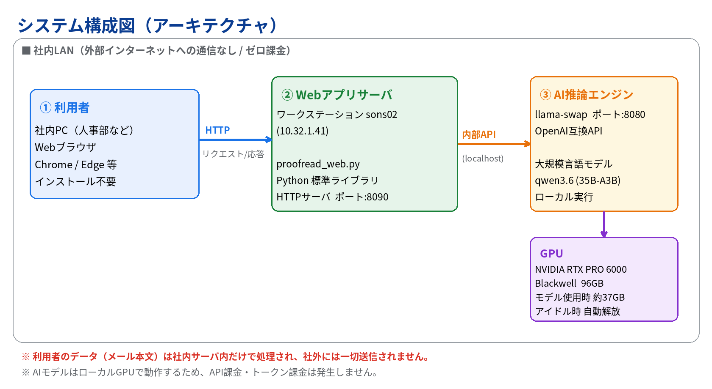
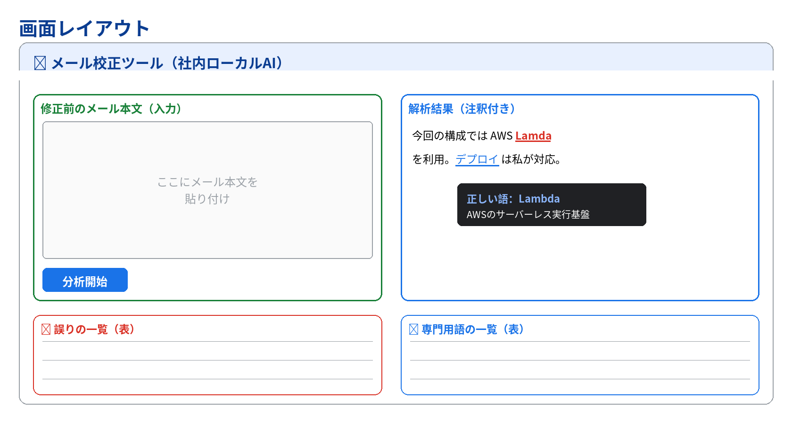

OUR VALUE
既存の外部校正サービスと違い、機密性の高い顧客メールも社内に閉じた環境で安全に校正できます。
入力したメールは社内サーバ内だけで処理。インターネットに送信しません。
社内のローカルLLMで動作。API・トークン課金が一切かかりません。
数秒で結果表示。メール送信前にその場で確認できます。
利用者はブラウザでURLを開くだけ。インストール作業は不要です。
ARCHITECTURE
「ブラウザ → Webアプリサーバ → ローカルLLM」の3層。すべて社内LAN内で完結します。

FEATURES
3種類の誤りを検出し、文中の専門用語には意味を添えます。
| 検出の種類 | 内容 | 例 |
|---|---|---|
| スペルミス | 英単語・技術用語の綴り間違い | Lamda → Lambda |
| 変換ミス | 漢字の同音異義語の誤り | 以外 ⇔ 意外、保証 ⇔ 保障 |
| 表記揺れ | 同一メール内の表記の混在 | サーバー ／ サーバ |
| 専門用語の解説 | IT・ビジネス用語に意味を付与 | AWS, SLA, デプロイ … |
※ 誤りは「赤字＋正しい語の注釈」、専門用語は「下線＋意味」で表示。本文の自動書き換えは行わず、指摘のみ（最終判断は人が実施）。
SCREEN
左に本文を貼り付け、「分析開始」を押すと、右に注釈付きの結果が表示されます。

PROBLEM → SOLUTION
TECH STACK
| レイヤ | 採用技術 | 役割 |
|---|---|---|
| フロントエンド | HTML / CSS / JavaScript | 本文入力・結果のハイライト描画・注釈ツールチップ |
| Webアプリサーバ | Python（標準ライブラリ） | 画面配信・AIへの中継・JSON整形（追加依存なし） |
| AI推論 | ローカルLLM qwen3.6（OpenAI互換API） | メールを解析し、誤り・専門用語をJSONで生成 |
| 実行基盤 | 社内GPUサーバ（ローカル） | モデルをローカル実行。社外送信なし・ゼロ課金 |
※ OpenAI互換APIのため、将来のモデル差し替えも設定変更のみで対応可能です。
DOCUMENTS
ご紹介資料と、利用・設計の各ドキュメント（PDF）です。